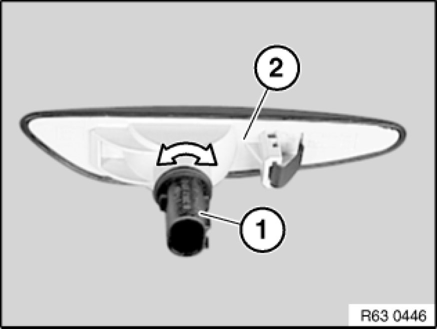

Replacing Bulb for Auxiliary Turn Signal Light, Front Left or Right
63 99 295 - Replacing bulb for auxiliary turn signal light, front left or right

Warning!
Follow instructions for handling light bulbs (exterior lights) Instructions for Handling Light Bulbs (Exterior Lights).

Necessary preliminary tasks:
- Remove front auxiliary turn signal light Service and Repair

Turn bulb holder (1) approx. 45° and remove from front auxiliary turn signal light (2).
Pull bulb out of holder (1).
Installation Note:
Note type of bulb [1][2]Specifications.